白黒フイルム現像方法 （静止現像）
数年前までﾌｲﾙﾑ現像は現像薬剤に書かれている通りに行っていましたが、静止現像方法を知り現在はすべて静止現像を行っています。
静止現像の利点は温度 現像時の攪拌 現像時間などあまり厳しくなくともそこそこに現像できるところです、個人的には全く問題ありません。
現像手順
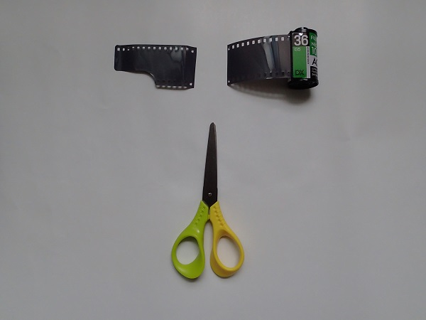
ﾌｲﾙﾑの先端（不要部分）を適当な長さにｶｯﾄする。
ステンレスリール
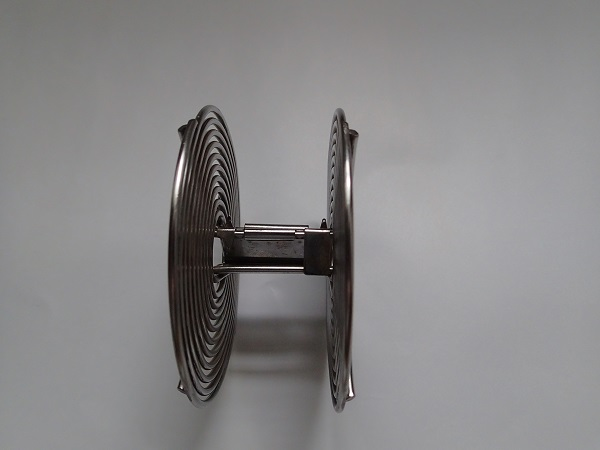
ステンレスのﾌｲﾙﾑをひっかける爪見えますか
ﾘｰﾙの爪にﾌｲﾙﾑをひっかける。
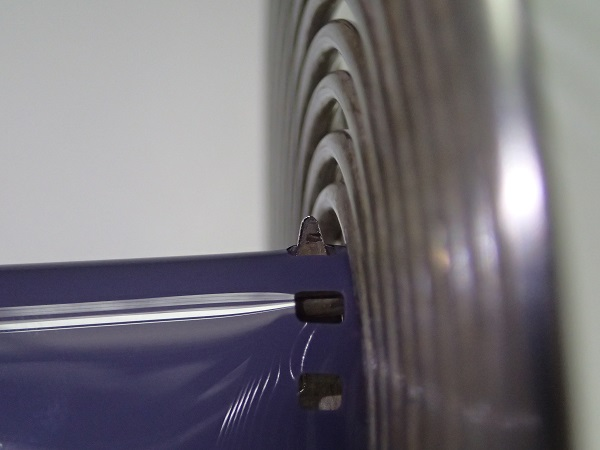
確実に引っかかっていることを確認する。
明るいところでの作業ここまで
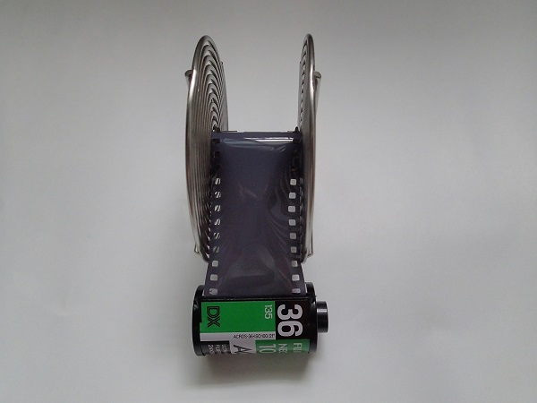
明るいとこで行う作業はここまでこれ以上行うと撮影したﾌｲﾙﾑに影響が出ます。
ﾀﾞｰｸﾊﾞｯｸ内でのﾌｲﾙﾑ巻き付け作業
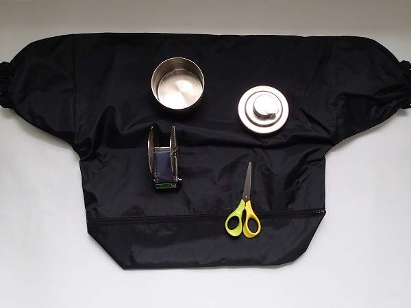
ﾀﾞｰｸﾊﾞｯｸの中にﾀﾝｸ、ﾊｻﾐ及びﾌｲﾙﾑの先端を引っ掛けたﾘｰﾙを入れる。
ﾀﾞｰｸﾊﾞｯｸの遮光用ﾁｬｯｸを閉め左右の手を入れる穴から両手を入れる。
手探りでﾌｲﾙﾑをﾘｰﾙに全て巻き付ける36枚撮りだとﾘｰﾙの外側までﾌｲﾙﾑが来ます。
最後まで巻き付けたらﾌｲﾙﾑﾊﾟﾄﾛｰﾈの直ぐ手前でﾊｻﾐをﾌｲﾙﾑでｶｯﾄする。
ﾌﾘﾙﾑを巻き付けたﾘｰﾙをﾀﾝｸに入れﾀﾝｸの蓋をして光が入らないようにする。
以上で暗いところでの作業は終了です。
現像液作成
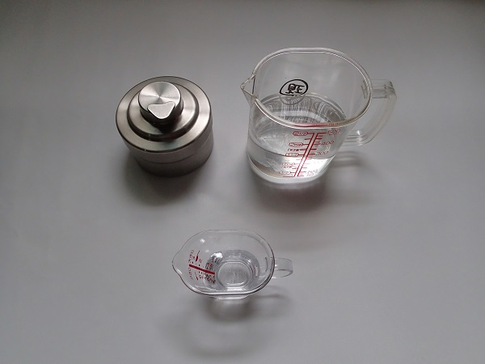
現像液は予め現像薬の説明書通り作っておきます。
ﾌｲﾙﾑ一本用のﾀﾝｸには約300cc入りますので、水道水を300ccｶｯﾌﾟに入れる、現像液20cc（温度などによって量は変える）を加えてかき回しておきます、出来たら温度を測っておく。
ﾌｲﾙﾑ現像
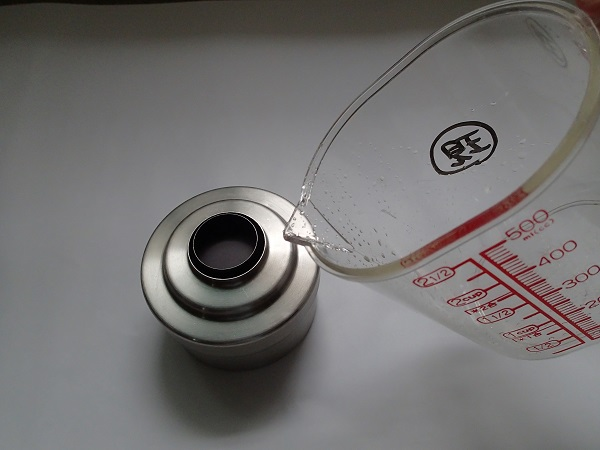
ﾀﾝｸの蓋を開け現像液を注入し蓋をする、そのまま90分位待つ。
攪拌は不要何もしないをただ待つ。
定着処理
定着液は予め定着液の説明書通り作っておく、現像終了後ﾀﾝｸの蓋を開け現像液を捨てる、
その後そのまま定着液を入れ蓋をする、定着処理（説明書の通り）を行う、だいたい5分から10分位で1分毎にﾀﾝｸを数度上下反転などをして定着液の攪拌を行う。定着終了後定着液は保存ﾋﾞﾝ又はﾀﾝｸに戻す。以降は明るいところで作業可（現像は終了しているので）。
水洗い
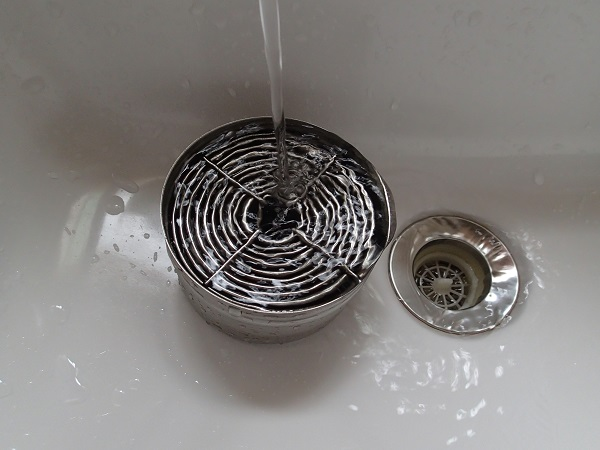
ﾀﾝｸに水道水を直接注ぎ流水にての水洗いを行う10分か15分位。
ﾌｲﾙの片側を吊るす
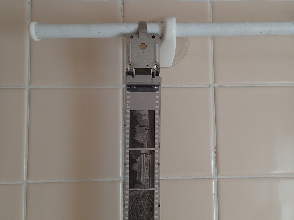
ﾌﾘﾂｸﾘｯﾌﾟをﾌｲﾙﾑの片側を挟む、これから乾燥させますが埃が大敵になりますので風呂場などが良いでしょう（私の場合はいつも風呂場）ｸﾘｯﾌﾟをﾀｵﾙかけなどに引っ掛ける。
ﾌｲﾙﾑの先に重りを
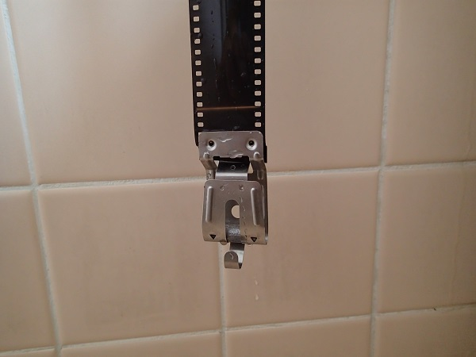
ﾘｰﾙよりﾌｲﾙﾑを全て巻きだした後重り（ﾌｲﾙﾑｸﾘｲﾌﾟは重りがついています）を付けてﾌｲﾙﾑを伸ばす。
水分の拭き取り
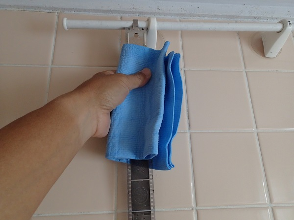
水分をふき取ります、拭き取りむらを作らず又埃を付けないように上から下へﾌｲﾙﾑの水分を一度でふき取っていきます。あまり強くするとﾌｲﾙﾑに傷がつきます。
ﾌｲﾙﾑ切り離し収納
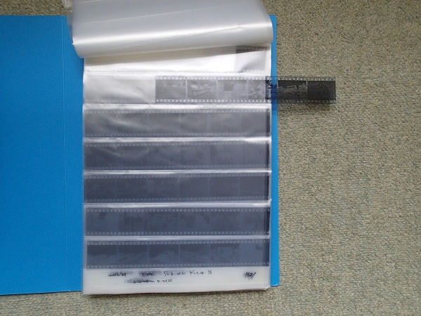
数時間自然乾燥させた後、6枚ずつ切り離しﾈｶﾞ・ﾌｫﾙﾀﾞｰに入れていきます。
以上でﾌｲﾙﾑ現像は終了しました。
ﾎｰﾑ